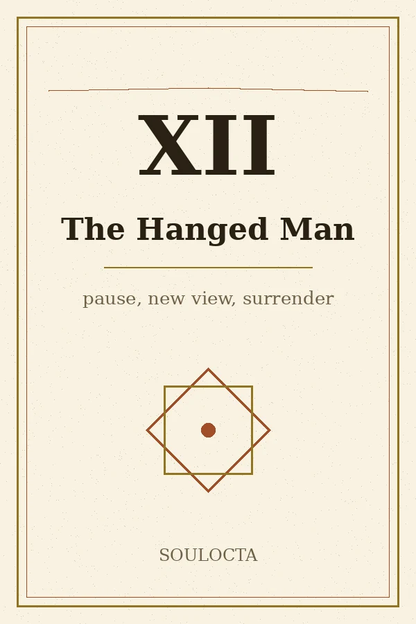

Arcana 12 · The Hanged Man
The Hanged Man — Arcana 12 of the Destiny Matrix
Arcana 12, the Hanged Man, is the card of the useful pause. In the Destiny Matrix it marks the moment when pushing harder will not help, and the only move that works is to stop, look at the situation upside down, and wait. The Hanged Man is not stuck. It is still on purpose.

What does the Hanged Man mean in the Destiny Matrix?
The Hanged Man as a Destiny Matrix position means you are in a pause, and pushing harder will not help. The traditional image is a figure hanging upside down by one foot, calm, with a halo: he is not struggling, and he is not trapped. He has chosen to hang there, because from upside down the world looks different. Wherever this card sits, the area improves when you stop forcing it and start watching it.
| Zone | Positive (+) | Negative (−) | Actionable shift |
|---|---|---|---|
| Centre | Perspective; patience; empathy for the other side | Permanent delay; martyrdom; suffering quietly for effect | Use the pause: ask what the delay is protecting you from |
| Money line | A new angle on a stuck project; waiting for the right timing | A career on hold for years; refusing to decide | Set a date for the decision, then honour it |
| Love line | Seeing a partner clearly, upside down and honestly | Staying in a bad relationship out of sacrifice | Ask what you would advise a friend in your place |
| Talent | Seeing what others miss by looking differently | Never finishing, because the view is never perfect | Ship one imperfect version and learn from it |
| Karmic tail | Learning that surrender is not giving up | Turning a pause into a permanent excuse | Release one small thing today, on purpose |
The Hanged Man as your centre (E)
The Hanged Man in the centre means your whole chart is organised around perspective. You learn through delays, detours and periods when life seems stuck, and you see what others miss because you are willing to hang still and look. You are at your best when you use a pause instead of enduring it, and at your worst when a pause becomes a permanent excuse. The Hanged Man is the entry point of two karmic tails, 12-16-4 and 12-19-7, so if either tail is yours, read its guide alongside this one.
The Hanged Man in your money line
The Hanged Man in the money line means your income grows when you stop forcing a stuck project and look at it from a new angle. A job application that keeps failing, a business that will not grow, a negotiation that has stalled — the answer is rarely more effort in the same direction. It is usually a different question: who is this for, and what would they pay for. Set a date for the decision, then honour it, because a pause without a deadline is a career on hold.
The Hanged Man in your love line
The Hanged Man in the love line means you are seeing a partner clearly, perhaps for the first time, upside down and honestly. That can be a gift: the argument that looked like cruelty looks like fear when you turn it over, and the partner who looked boring looks steady. The trap is sacrifice as a lifestyle: staying in a bad relationship because leaving would feel selfish, and suffering quietly so the other person feels guilty. Ask what you would advise a friend, and listen to your own answer.
The Hanged Man in your talents
The Hanged Man in your talents means you see what others miss by looking differently — the flaw in a plan, the angle nobody tried, the question that reframes the whole problem. That is a real talent, and it is easy to waste, because the view is never perfect and the work is never finished. The talent is not the perfect view. It is the one imperfect version you ship and learn from. Ship it, watch what happens, and then adjust.
The Hanged Man reversed, blocked or low
A blocked Hanged Man looks like a pause that has become a life. The decision is always next month, the move is always next year, the conversation is always after the holiday, and the holiday never comes. The block is rarely a lack of options. It is usually the fear that deciding will close a door, so every door is kept half-open. The fix is one small release: let go of one thing today, on purpose.
How to work with the Hanged Man this month
Stop struggling for one week, on purpose, and simply watch — not by giving up, but by refusing to force it for seven days while you pay close attention. Ask what the delay is protecting you from, what you would see if you stopped defending your first opinion, and what small thing you can release today. Then, at the end of the week, make one decision — any decision — and act on it. The Hanged Man grows when a pause becomes a choice.
How to turn The Hanged Man from minus to plus
Five shifts, from minus to plus. First, I force what needs time becomes I stop for a week and watch, on purpose. Second, I turn a pause into an excuse becomes I set a date for the decision, then honour it. Third, I suffer quietly so others feel guilty becomes I ask what I would advise a friend. Fourth, I never finish, because the view is never perfect becomes I ship one imperfect version and learn. Fifth, I keep every door half-open becomes I release one small thing today, on purpose.
Check where this energy sits in your free Destiny Matrix chart — enter your birth date and see whether The Hanged Man is your centre, your talent, or your karmic tail. If it is, also read your money line and destiny-matrix-karmic-tail-12-19-7-warrior.html.
Related guides
Keep reading: destiny matrix vs numerology · destiny matrix vs tarot · destiny matrix for beginners · destiny matrix FAQ · the Chariot, arcana 7 of the Destiny Matrix · Justice, arcana 8 of the Destiny Matrix · the Lovers, arcana 6 of the Destiny Matrix · the Devil, arcana 15 of the Destiny Matrix · the Sun, arcana 19 of the Destiny Matrix · karmic tail 18-6-6, Love Magic · karmic tail 15-20-5, the Rebel · karmic tail 9-9-18, Magical Knowledge · the Magician, arcana 1 of the Destiny Matrix · the Empress, arcana 3 of the Destiny Matrix · the Emperor, arcana 4 of the Destiny Matrix · the Wheel of Fortune, arcana 10 of the Destiny Matrix · Strength, arcana 11 of the Destiny Matrix · the World, arcana 21 of the Destiny Matrix · karmic tail 15-8-11, Physical Suffering · karmic tail 21-4-10, Oppressed Soul · karmic tail 12-19-7, Warrior · karmic tail 6-17-11, Wasted Talent · all 22 arcana meanings · all karmic tail guides · Destiny Matrix compatibility calculator · what is the Destiny Matrix · how to calculate the Destiny Matrix.
Frequently asked questions
What does arcana 12, the Hanged Man, mean in the Destiny Matrix?
Arcana 12, the Hanged Man, means pause, a new point of view and surrender in the Destiny Matrix. The Hanged Man marks the moment when pushing harder will not help, and the only useful move is to stop, look upside down, and wait.
What does the Hanged Man mean as a centre?
The Hanged Man as a centre means perspective is the theme of your chart. Your growth comes from hanging still long enough to see differently, and from turning a pause into a choice instead of a permanent excuse. The pause becomes useful the moment it is chosen.
What does the Hanged Man mean in the money line?
The Hanged Man in the money line means your income grows when you stop forcing a stuck project and look at it from a new angle. Set a date for the decision, then honour it, because a pause without a deadline is a career on hold.
What does the Hanged Man mean in love?
The Hanged Man in the love line means you are seeing a partner clearly, upside down and honestly. The trap is sacrifice as a lifestyle, so ask what you would advise a friend in your exact place, and listen to your own answer.